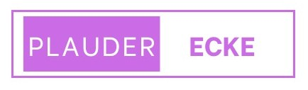

Offline + Ehrlich
Veröffentlicht am: 28.Oktober.2025
Folge 1: Live aus Berlin - Fitna in Freundesgruppe stiften
Flo frontet ehrenlosen Zuhörer und Gast Chapo102 beehrt die Jungs beim Berlin Stopp.
Abspielen:

Veröffentlicht am: 28.Oktober.2025
Flo frontet ehrenlosen Zuhörer und Gast Chapo102 beehrt die Jungs beim Berlin Stopp.
Abspielen: